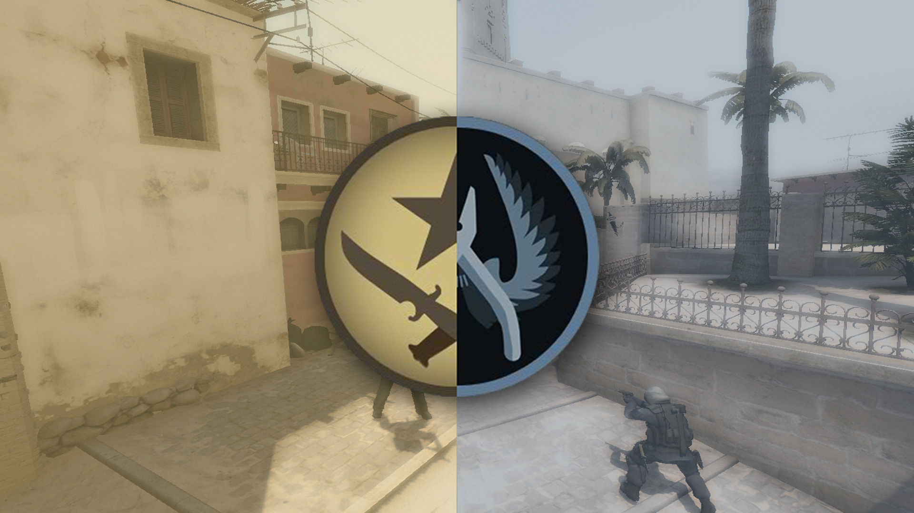

A Valve világsikerű FPS-e megváltoztatta a játékokról alkotott közvéleményt, az első nagyobb volumenű esport versenyek is az online lövölde pályáin zajlottak. 2012-ben aztán Gabe Newell és csapata megint nagyon alkottak, amikor a sorozat legfrissebb darabja, a CS:GO került kiadatásra. A shooter hatalmas közönségnek örvendhetett, mindenki azonnal rákattant a játékra. Az évek alatt a játék sikere gyakorlatilag töretlen, a Rainbow 6 Siege-en kívül egyik hasonló név sem ért a közelébe, se népszerűségben, se sehogy máshogy, de az R6 is csak a legközelebb jutott, a vezetést sosem sikerült átvennie. De miről is szól ez a játék, amelyből számtalan verseny, bajnokság, fogadás és botrány született már? Mi a célunk, mi a feladatunk?
Egy külső szemlélő számára, aki egyáltalán nem játszott még semmivel, úgy tűnhet, hogy csak arról van szó, hogy mindenki vesz a nagyon sokféle és fajta fegyver közül egyet, elindul, és darál, és a végén csak egy marad talpon. Valójában viszont sokkal többről van szó. De kezdjük az alapokkal.
A meccsek két csapat, a Terroristák (Terrorists, „T”-s), és a Terror-elhárítók (Counter-Terrorists, „CT”-s) között zajlik. Ellentétben sok más lövöldözős játékkal, mint például a Valve másik nagy sikerével, a Team Fortress 2-vel, vagy a Blizzard shooterével, az Overwatch-al, a karaktereink között semmi különbség nincs, nincsenek se képességeik, se különleges mozdulataik. Csak öt mindenre elszánt terrorista, és öt, őket minden áron megállítani akaró elhárító áll egymással szemben. Kétféleképpen lehet megnyerni egy kört, attól függően, hogy melyik pályán játszunk. Egyszer lehet úgy, hogy a gonosz oldal megpróbál felrobbantani két fontos célpont közül (ezek az „A”, és a „B” pontok) egyet, a hősies rendőrök pedig ezt akarják megakadályozni, vagy úgy, hogy lelövik az összes ellenséget, vagy úgy, hogy hatástalanítják a már élesített bombát. Természetesen a T-k is nyerhetnek a CT-k kiiktatásával. Ha esetleg ez nem nyerte el a tetszésünket, megcserélhetjük a szerepeket, és játszhatunk „túszos” módot, ahol az ellen-terroristák támadnak, és próbálnak 2-3 (a győzelemhez egy is elég) túszt biztonságba juttatni, a terroristák pedig ezeket a túszokat akarják megvédeni, viszont természetesen, hogy pénzt kapjanak értük, életben is kell tartaniuk őket. Tehát ha bármelyik csapat végez a túszokkal, akkor az a csapat elveszti az adott kört. Kivétel nélkül minden versenyen, és a legtöbb otthoni, csak „casual” játékunk alatt is 30 körből kell 16-ot megnyerni ahhoz, hogy az egész mérkőzést vigyük. A csapatok a 15. kör végén cserélnek ruházatot, tehát azok, akik eddig a terroristákat játszották, rehárítóvá válnak, és fordítva.
A hivatalos tornákon, ha 15-15 az állás, akkor különböző szabályokkal hosszabbítás során döntik el, hogy ki távozzon győztesként. Otthon viszont egyszerűen döntetlennel zárul a harc, és mindenki ennek megfelelően kap a rangjához pontokat. Versenyeken emellett csak és kizárólag a bombahatástalanítós verzió létezik, a túszkiszabadítós nem.
A játékban rengeteg pálya található, ebből a ligákban a legtöbbet használtak a következők: Dust 2, ami valahol, egy közel-keleti kisvárosban játszódik, és ez a valaha volt legnépszerűbb map, minden Counter Strike-ban volt Dust 2, és mindig is lesz. Mirage, ahol egy marokkói városban találjuk magunkat. Inferno, ahol Olaszországba utazhatunk el. Train, ahol a csata egy orosz vasútállomáson zajlik. Cache, ami a csernobili atomerőmű közelében található, ezen kívül pedig rengeteg más pályát is alkalmaznak a versenyeken, ezek csupán a leggyakoribbak.
Ennek a sorozatnak az első részében még mindenképpen beszélnünk kell a fegyverekről. 34 fegyver közül választhatunk, ebben a hosszú listában pedig találhatóak többek között pisztolyok, mesterlövész puskák, gépkarabélyok valamint sörétes puskák. Az, hogy melyik fegyver áll kézre nekünk, csak gyakorlással és próbálgatással derül ki, viszont a profik leggyakrabban a terrorista oldalon az AK-47-et, terror-elhárítóként pedig az M4A4-et (vagy a hangtompítós M4A1-S-t) preferálják. Ezen kívül, akinek van érzéke hozzá, az előszeretettel használja a hírhedt AWP mesterlövész puskát, aminek testre, illetve fejre leadott garantált egy lövéses ölése a megfelelő játékos kezében a legveszélyesebb fegyverré teszi a játékban. A felsorolt fegyverek mellett még különböző szituációkban hasznos fegyverekkel is dolgoznak a versenyzők, és van, amikor csak az olcsóbb SMG-kre van keret, szóval azokkal is érdemes megtanulni lőni. De persze, mint minden sportban, csak a gyakorlás hozhatja el a profizmust, és csak sok beleölt órával érhetjük el azt, hogy igazi CS:GO játékosok legyünk!